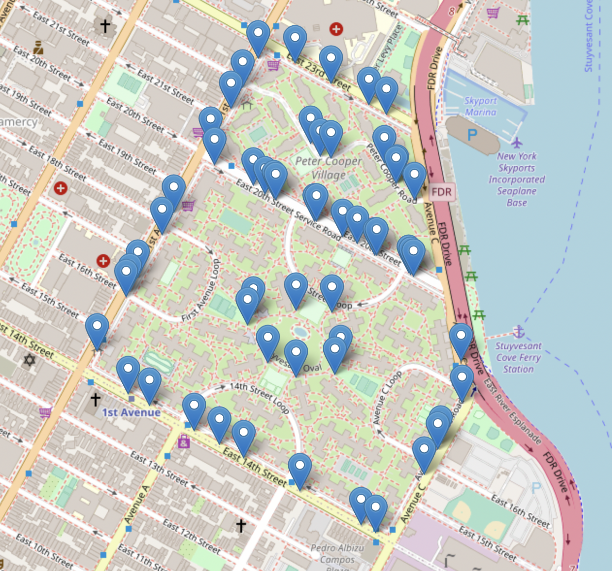

By Nicholas Cheung
nicholas.cheung79@myhunter.cuny.edu
Hunter College High School
CSCI 127

Stuyvesant Town-Peter Cooper Village, also commonly known as StuyTown, is a neighborhood located on the east side of Manhattan from First Avenue to Avenue C between 14th and 23rd Street. The primary zipcodes for StuyTown are 10009 and 10010. StuyTown's population in 2019 was 148,482 with the majority, 66.1%, of the neighborhood's residents being white. Asians make up the second highest percentage 15.5%, then Hispanics with 9.2%, next Blacks with 6.8%, and then finally the rest of the 2.4% are made up of other races. The median household income in StuyTown is $162,350 with a povery rate of 6.3%. Since 2006, the median cost of rent per month for an apartment in StuyTown has increased from $2060 to $2920 in 2019.
